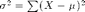

Contents
Mean
The average of elements in a set. Computed by summing the elements and dividing that sum by the number of elements. .
avg = mean([1 2 3 4])
avg =
2.5
Variance
A measure of the "spread" of data from the mean. Designated as , it is the sum of the squares of the difference in the observations from the means: .
variance = var([1 2 3 4])
variance =
1.6667
Standard Deviation
The square root of the variance, designated by a lowercase sigma.
stdex = std([1 2 3 4])
stdex =
1.291
Covariance
The measure of how much two variances change together.
covar = cov([rand(4,4)])
covar =
0.089454 -0.012803 -0.015401 -0.0050734
-0.012803 0.01365 -0.027912 -0.041719
-0.015401 -0.027912 0.10449 0.089941
-0.0050734 -0.041719 0.089941 0.16728
Correlation
Assesses the degree to which two elements are related. Typically operates on matrices and results in a square matrix. Standardized to a maximum value of 1.
correl = corrcoef([rand(4,4)])
correl =
1 -0.15198 0.060082 0.98142
-0.15198 1 -0.94867 -0.22253
0.060082 -0.94867 1 0.075635
0.98142 -0.22253 0.075635 1